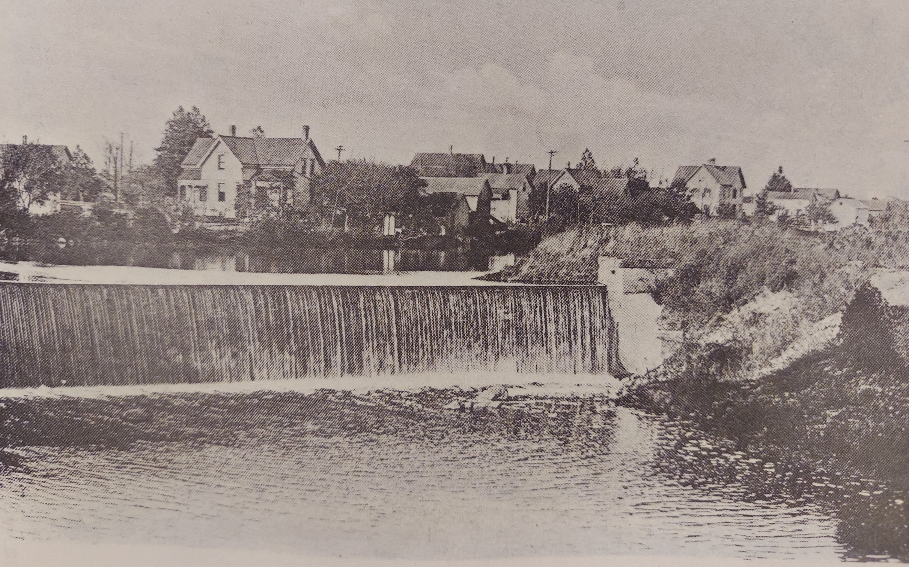

c1860
The construction of original Woolen Mill dam is completed (exact date unknown). The dam is a simple rock filled crib design.

The original Woolen Mill dam c1909, photo from the Rappold Collection